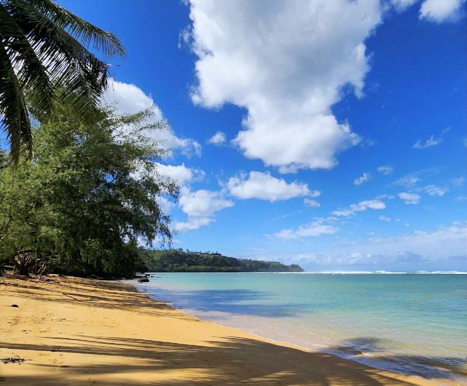

Anini Beach
Place: Anini Beach, Kauaʻi
Type: Beach / fringing reef / traditional fishing landscape
Story it tells: A protected lagoon where Hawaiʻi's largest fringing reef shaped centuries of fishing, navigation, and community life, while the beach's name evolved from the older place name Wainini.

Anini Beach stretches for nearly two miles along Kauaʻi's North Shore beneath towering coastal bluffs. Offshore lies Hawaiʻi's longest and widest fringing reef, a natural barrier that absorbs the power of incoming Pacific swells before they reach shore. Behind the reef, a broad lagoon of calm, shallow water has made Anini one of the island's safest places for swimming and snorkeling, even while neighboring beaches experience dangerous surf.
The beach's modern name has an unusual history. Older records and local traditions identify the area as Wainini or Wanini, a name believed to refer to the freshwater springs that once seeped from the cliffs behind the shoreline. Over time, the name evolved through everyday speech, and local lore adds another twist: after an early road sign misspelled the name, an angry resident reportedly blasted the leading "W" off the sign with a shotgun, leaving only "Anini." Whether through changing pronunciation, damaged signage, or both, the shortened name eventually became the one used on maps, roads, and official records for the beach, road, and stream.
Although today's name means "small," "stunted," or "inferior" in Hawaiian, the landscape itself is anything but. The immense reef created one of Kauaʻi's most valuable coastal environments. Protected from heavy surf, the lagoon became an ideal place for teaching children to swim, paddle canoes, and learn to read the ocean. Families gathered fish with throw nets, harvested limu (seaweed), and worked together during hukilau fishing events that supplied entire communities.
The reef demands respect. While the lagoon appears calm, enormous volumes of seawater continually wash over the coral before escaping through deep openings in the reef. These channels generate powerful rip currents capable of sweeping swimmers far offshore. Hawaiian fishermen understood these currents well, using them to their advantage by fishing along the channel edges, where reef fish and larger predators naturally concentrated as water rushed back to sea.
The mixing of freshwater from Anini Stream and historic cliffside springs with the sheltered lagoon created an exceptionally productive marine habitat. Green sea turtles (honu) regularly graze on beds of native limu, while juvenile reef fish, mullet, bonefish, and other species use the protected shallows as nursery grounds before venturing into deeper water. Hawaiian monk seals also frequently haul out on Anini's quiet shoreline, taking advantage of the calm lagoon to rest and teach young pups to hunt.
Today Anini remains one of Kauaʻi's most beloved beaches. Ironwood trees line much of the shoreline, providing shade above the sand, while the offshore reef continues to define both the beauty and character of the coast. Although modern runoff and sediment now threaten parts of the coral ecosystem, the beach still reflects the remarkable relationship between Hawaiian place names, geology, and the generations of people who learned to live within the rhythms of the reef.